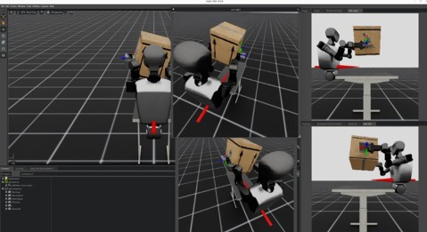

Georgia Tech - LiDAR Lab 
My research focuses on enabling humanoid robots to perform reliable loco-manipulation in real-world environments. I am especially interested in tasks where a humanoid must coordinate locomotion, whole-body control, manipulation, and physical contact to interact and complete task in a world of variation. At the Georgia Tech LiDAR Lab, I have worked on humanoid robotics projects involving diffusion policies, reinforcement learning, tactile sensing, VR teleoperation, simulation, data collection, and hardware deployment. My work has been centered around humanoid platforms such as the Booster T1 and Unitree G1, using tools including Isaac Lab, Isaac Sim, MuJoCo, and VR-based data collection systems.
Diffusion Policy Fine-Tuning for Humanoid Loco-Manipulation
One of the main projects I contributed to was Diffusion Policy Fine-Tuning for Humanoid Loco-Manipulation via Reinforcement Learning. This work addresses a key challenge in humanoid autonomy: diffusion policies can generate high-level plans from demonstrations, but those plans may not always match what the low-level whole-body controller can accurately execute. This mismatch can lead to tracking errors, distribution shift, and task failures during long-horizon loco-manipulation.
REFINE-DP solves this by using a hierarchical framework where a diffusion policy acts as the high-level planner and a reinforcement-learning controller handles low-level whole-body execution. The diffusion policy outputs task-relevant commands, such as base motion and hand poses, while the RL controller tracks those commands on the humanoid. The system is then fine-tuned with reinforcement learning so the planner and controller improve together.
My contributions began with learning and working inside the manager-based Isaac Lab training pipeline. I trained reinforcement learning locomotion policies, developed training architecture for policy distillation, pushed training jobs to PACE, worked in a shared Git repository, and analyzed training results. I also contributed to early VR teleoperation data collection, where demonstrations were collected for later simulation and policy training. Later, I developed a heuristic planner for the door-opening task. This planner acted as a high-level action planner that sent commands to the trained locomotion and manipulation policies. I helped build the task logic for pulling a door toward the robot, trained the environment, analyzed task success, supported hardware testing, and contributed to the paper and presentation.
Whole-Body Humanoid Manipulation with Tactile Sensing
I also contributed to a project on whole-body humanoid manipulation using tactile sensing. This work focuses on the idea that humanoids should not rely only on vision and proprioception when completing contact-rich tasks. For large, bulky, or deformable objects, the robot often needs to use its chest, arms, forearms, and hands together, making distributed tactile feedback important for understanding contact and force across the body.
In this project, the Unitree G1 is equipped with large-area tactile sensors on the chest, forearms, and palms. These sensors provide contact information that is used by a diffusion-based policy to predict both end-effector motion and interaction forces. The system also uses a Whole-body Tactile Universal Manipulation Interface, or WT-UMI, to collect demonstrations that include operator motion, proprioception, and tactile images.
My main role in this project has been leading data collection. I have helped organize collection sessions, coordinate with other students, collect demonstrations, revise and clean data, and keep the dataset organized for the training pipeline. The tasks include yoga ball manipulation, bucket manipulation, pillow manipulation, and collaborative manipulation tasks such as moving tables and large pipes that require multiple operators.

Research Direction
Through these projects, I have gained experience across the full humanoid learning pipeline: building simulation environments, collecting demonstration data, training policies, analyzing results, testing on hardware, and contributing to research papers. Moving forward, I want to take more ownership of this full pipeline by developing policies that I can train, test, and deploy independently. My long-term research goal is to improve how humanoid robots perform real-world tasks.


